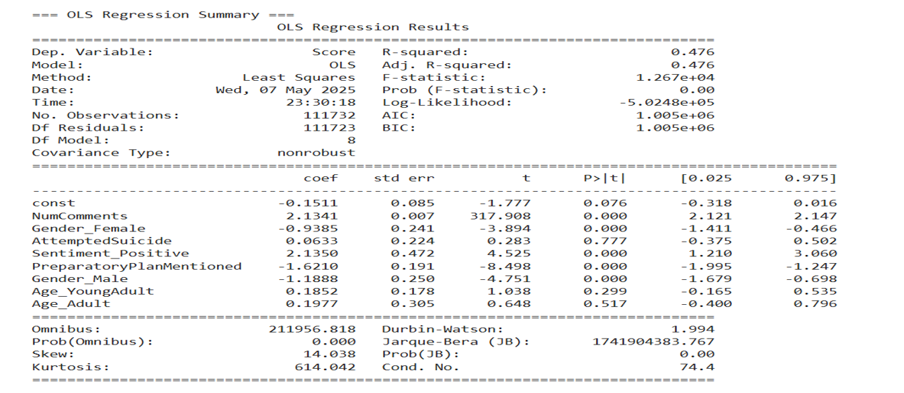

M.S Management Information Systems at UIC | Data Science Enthusiast | Project Management
About Me
Hello! I’m Prasad Vichare - a graduate student at the University of Illinois Chicago (UIC) , currently pursuing a Master’s in Management Information Systems. With over five years of professional experience, I bring a balanced perspective that combines academic knowledge with hands-on industry exposure. My journey so far has been shaped by a deep curiosity for how data and systems can be used to improve processes, solve problems, and support better decision-making.
Before moving to Chicago, I worked in leadership roles where I managed teams, delivered impactful projects, and contributed to large-scale digital solutions. I’ve worked across various domains—from analyzing business performance to automating repetitive tasks. These experiences have sharpened my problem-solving skills, strengthened my communication abilities, and deepened my passion for using technology meaningfully. I’m driven by the idea of creating solutions that bring real value-whether to businesses, communities, or individuals. I’m also someone who enjoys collaborating, mentoring, and constantly learning to grow both personally and professionally.
Database Management Systems: Microsoft SQL Server, MySQL, Oracle
Business & Project Management: Agile, Risk Mitigation, Stakeholder Management, Product Life-cycle Management,
Cross-functional Team Leadership, Operation Management, Project Management, Microsoft Office Suite, Linux
Experience
UI Health – Department of Cardiology
Secretarial Assistant · Dec 2024 – Present · Chicago, IL
At UI Health, I support the Department of Cardiology by designing interactive Power BI dashboards that streamline weekly reporting on profitability, procedure times, and provider performance. I also manage the department’s website via WordPress, ensuring accurate and up-to-date content while enhancing user navigation. This role has strengthened my data visualization, stakeholder communication, and web management skills in a real-world healthcare environment.
At Reliance Jio, I led a cross-functional team of 12 engineers to deploy nationwide A2P and P2P SMS systems, handling over 10 million daily transactions. I developed automated data pipelines and reporting solutions using Python, SQL, Shell scripting, and AWS, significantly reducing manual workloads and improving system performance by 25–30%. I also collaborated with business teams to align tech solutions with strategic goals, gaining valuable experience in operations, data engineering, and team leadership.
Quess Corporation
System Engineer · Jan 2019 – Sept 2020 · Mumbai, India
In my role as a System Engineer, I focused on process automation and system support. I built internal tools using Python, Shell scripting, and SQL that eliminated over 200 manual tasks per month and improved project delivery timelines. I also created comprehensive troubleshooting documentation, reducing support queries and increasing team efficiency. This position laid the foundation for my interest in automation, data processing, and scalable backend solutions.
Projects

Self-Harm and Suicide Ideation on Reddit using LLM
This project analyzes over 225,000 posts and comments from the r/SuicideWatch subreddit to explore patterns of self-harm and suicidal ideation. Using large language models (LLMs), extracted emotional and behavioral features based on validated psychological frameworks like DSM-V and C-SSRS. The project involved building Python pipelines for data cleaning, user-level aggregation, and longitudinal emotion tracking, classifying users as 'Improved' or 'Declined' based on emotional trends. Key findings revealed that preparatory planning significantly increases the risk of suicide attempts, and that creative and social coping mechanisms are associated with emotional improvement. This work demonstrates the potential of AI to aid in early mental health intervention strategies.
Student Test Score Prediction using Machine Learning
This project predicts students' test scores using machine learning by analyzing data on various influencing factors to uncover key patterns and insights for improving academic outcomes. Key highlights include a modular project design, the creation of logging and exception handling modules, and the development of a pipeline for data preprocessing, feature engineering, and model training. The project utilizes Docker for containerization, AWS for hosting with Elastic Container Registry (ECR) and EC2 for scalability, and incorporates a CI/CD pipeline using GitHub Actions for streamlined deployment and workflow management.
Analyzed 6.5 million rows of data to uncover insights about delays, flight performance, and operational trends. Designed interactive Tableau dashboards for visualization.
Data Analysis on Economy Data to Understand Life post-COVID-19
Conducted exploratory data analysis using Python to examine global economic shifts following the COVID-19 pandemic, leveraging data cleaning, analysis, and visualization techniques to uncover patterns and relationships between various economic parameters.